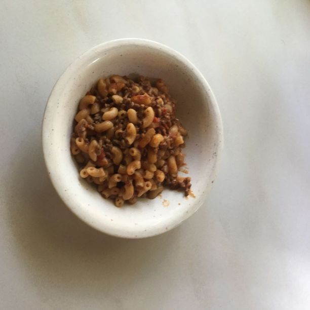

"Nistipata"

Description
The source of nutrition for those in a tough financial place, like broke students and addicts.
Consists of macaroni, minced meat and ketchup, every item the cheapest of its kind.
Ingredients
- Minced meat | 400g
- Macaroni | 400g
- Ketchup | whatever is left in the bottle
Steps
- Boil the macaroni until it is cooked to your liking. 8 minutes is a good starting number.
- Fry the minced meat until it is brown and ready.
- Mix the two ingredients in the pot you used to boil the macaronis.
- Add ketchup and enjoy!